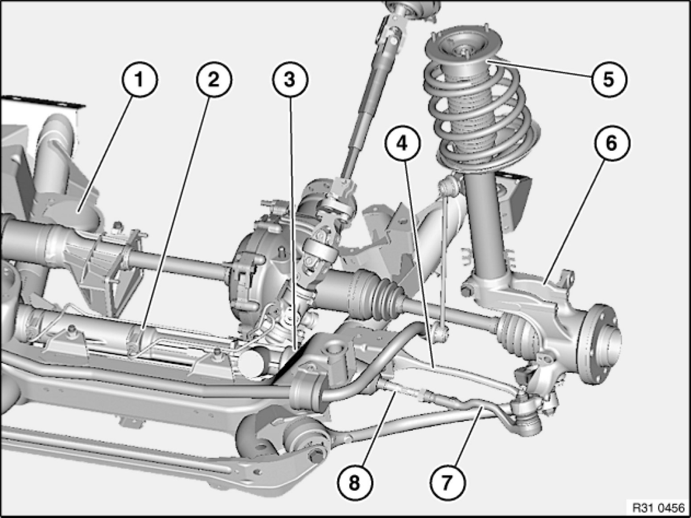

Procedures
31 00 ... - Front axle + steering: wheel/chassis alignment check must be carried out after the following work

A wheel/chassis alignment check must be carried out after the following work:
- Release of following screw/bolt connections:
- Steering gear to front axle carrier
- Control arm to front axle carrier
- Support bearing to body (if centering pin is missing)
- Tie rod end to tie rod
- Replacement of following parts:
1. Front axle carrier
2. Steering gear
3. Gaiter (if the tie rod end has to be screwed off)
4. Control arm / rubber mount
5. Support bearing (if centering pin is missing)
6. Swivel bearing
7. Tie rod end
8. Tie rod